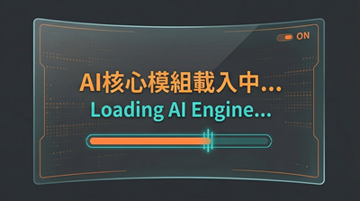

📜 更新日誌
📅 2026.03.22 程式更新 (v3.0)
- 🔹 A. 介面全新升級：採用側邊欄導航介面，操作更直覺且支援深色主題樣式。
- 🔹 B. 本地離線推論優化：GPU 加速效能提升，數據 100% 本地化保障隱私安全。
- 🔹 C. 穩定性與除錯優化：解決多重檔案下載覆蓋問題，提升批次處理穩定度。
- 🔹 D. 新增運算模式設定：支援自訂 float16 / int8 等精度，自由分配 GPU/CPU 負載與顯存優化。
- 🔹 E. 雙字幕專屬字體設定：支援主副字幕「獨立調整」字型、大小、顏色與底框，排版更細緻。
- 🔹 F. AI 核心模組全面升級：大幅更新底層依賴，完美支援並相容「最新世代 NVIDIA 系列顯示卡」，驅動旗艦硬體極速效能！
📅 2026.02.05 程式更新 (v2.2)
- 🔹 A. 進度回饋 (Feedback)：新增視覺化進度條與時間戳記，轉錄/壓制進度一目了然。
- 🔹 B. 穩定性優化 (Stability)：新增 OOM 自動降級救援機制 (GPU→CPU) 與防呆參數，解決卡頓與閃退。
- 🔹 C. 控制優化 (Control)：修正按鈕狀態鎖死問題，確保隨時可中斷並安全重置。
- 🔹 D. 中斷執行 (Stop Button)：新增「中斷」按鈕，讓使用者可以在轉錄過程中隨時喊卡，不用再只能強制關閉視窗。
- 🔹 E. 指定來源語言 (Language Selection)：新增語言選擇選單 (下拉式)，對於日文、英文等特定影片，可直接指定語言，提高辨識準確度。
📅 2026.02.01 程式更新 (v2.0)
- 🔹 A. 保留 V1.0 分流下載：為舊版使用者保留既有下載選項。
- 🔹 B. 新增 V2.0 一次打包下載：含主程式與所有 AI 模型 (已加入 Large-v3-turbo)，解壓縮即用。
- 🔹 C. 修復崩潰問題：修正編輯大量字幕時造成的遞迴錯誤，全面改為「分頁模式」。
📅 2026.01.31 首次發布 (v1.0)
- 🔸 A. 解決流量限制：透過建立 Google Drive 分流載點解決Quota Exceeded問題。
- 🔸 B. 發現字幕編輯器 Bug：使用者回報編輯長影片字幕時會閃退，已於 v2.0 修正。
- 🔸 C. 模型擴充：使用者建議新增 CP 值極高的 large-v3-turbo 模型，造福中階顯卡用戶。
💡 系統簡介
Studio0808 AI 字幕工廠 基於 OpenAI 最先進的 Whisper Large-V3 模型，提供精準的語音辨識服務。
無論是影片創作者、會議記錄，還是追劇翻譯，只要硬體效能夠強，就能快速完成逐字稿生成，還可逐句修正編輯，再壓制影片產出。完全本地執行，無需上傳雲端，隱私百分百保障。
🚀 離線 AI 核心
內建 Whisper Large-V3，語音轉寫 (Transcribe) 可完全離線執行，保障隱私；僅在使用翻譯功能時需連接網路。
🌏 智慧雙語翻譯
支援全球近 100 種語言（含英、日、韓、歐語系及東南亞語系等），一鍵生成「原文+中文」雙語字幕。
🔥 極速壓制 (Burn-in)
內建 FFmpeg，可將字幕直接燒錄進影片中。
🎨 視覺化參數設定
即時預覽字幕效果，支援 SRT/VTT 雙格式輸出。新增『主/副字幕』獨立樣式設定，能分開調整字型、大小與底框，排版更細緻。
💻 GPU 硬體加速
深度優化 NVIDIA CUDA 運算，速度提升 5~10 倍。
🛡️ 綠色軟體 免安裝
採用專業資料夾封裝，純淨不寫入系統登錄檔。通過 VirusTotal 國際權威資安檢測，保證無毒、安全、可靠。
✨ 適用場景
🎬 影片創作者救星
適用對象：YouTuber / TikToker / 剪輯師將繁瑣的上字幕工作交給 AI，時間縮短 95%。支援將字幕直接「燒錄」進影片，輸出即可上傳，讓您專注於內容創作而非打字。
🎓 課程與會議記錄
適用對象：學生 / 研究生 / 秘書把演講或會議錄音檔丟進來，瞬間轉成 SRT 逐字稿。配合 VAD 功能過濾雜音，輕鬆整理重點，學習效率翻倍。
🍿 追劇與語言學習
適用對象：日韓劇迷 / 語言學習者一鍵生成雙語字幕 (如：日文+中文)。看懂劇情的同時，還能對照原文學習外語，打破語言隔閡。
🎤 KTV 伴唱帶製作
適用對象：音樂愛好者 / 翻唱歌手精準的時間軸校正功能，讓歌詞與歌聲完美同步。支援自訂字幕樣式與顏色，輕鬆做出專業級 MV 字幕效果。
🎙️ Podcast 節目轉製
適用對象：播客 / 自媒體經營者匯入 MP3 音檔立刻生成逐字稿，方便擷取精華片段製作成 Reels 或 TikTok 短片，擴大受眾觸及率。
📝 訪談逐字稿整理
適用對象：記者 / 文字工作者無論是單人訪談或多人對話，AI 都能快速將語音轉為文字。省去反覆聽打的時間，讓您更快完成採訪稿撰寫。
🧠 AI 模型效能比較
| 模型 (Model) | 參數量 | 速度 (4min MV) | 準確度 | 需求 VRAM |
|---|---|---|---|---|
| Tiny / Base (v3.0 已不提供) | ~74M | < 30 秒 | ⭐️ 普通 | < 1GB |
| Small (v3.0 已不提供) | 244M | ~ 1 分鐘 | ⭐️⭐️ 尚可 | ~ 2GB |
| Medium | 769M | ~ 3 分鐘 | ⭐️⭐️⭐️ 佳 | ~ 5GB |
| Large-v2 | 1550M | ~ 5 分鐘 | ⭐️⭐️⭐️⭐️ 優 | ~ 8GB |
| Large-v3-turbo NEW | 809M | ~ 4 分鐘 (推薦) | ⭐️⭐️⭐️⭐️⭐️ 優異 | ~ 5GB |
| Large-v3 | 1550M | ~ 6 分鐘 | ⭐️⭐️⭐️⭐️⭐️ 極優 | ~ 10GB |
建議使用 NVIDIA GTX 1060 以上顯卡。若 VRAM 不足會自動切換至 CPU 模式，速度將大幅下降。
📖 操作教學
Studio0808_AI_Subtitle_V3.exe 即可開始使用。無需額外設定。💡 首次啟動提示：點擊執行後，會立即彈出「Studio0808 載入中」的啟動圖檔 (Splash Screen)。此時背景正在解壓縮與載入龐大的 AI 核心環境，請耐心靜候約 10~20 秒，待主畫面出現後圖檔即會自動消失。

💡 全新 V3.0 介面設計： 整合了「參數設定」與「即時預覽」，左側欄控制 AI 核心與轉錄參數，右側分頁調整字幕樣式，操作更順暢。
-
1️⃣ 載入素材 (File List)
將您的影片或是音樂檔案，直接拖曳入視窗內即可。支援批次處理多個檔案。
支援格式：mp4, avi, mkv, mov, webm, mp3, wav, flac, aac, m4a -
2️⃣ 設定選用參數 (左側欄位)
- AI 模型： 選擇
large-v3獲得最高精準，或large-v3-turbo兼顧速度。 - 影片語言： 依照影片發音選擇來源語言，若有外語需翻譯可勾選「雙語字幕」(翻譯需連網)。
- 運算模式： 依照您的顯示卡 (GPU) 顯存大小選擇對應的精度 (例如 float16 或 int8)，優化效能。
- AI 模型： 選擇
-
3️⃣ 自訂字幕外觀樣式 (右側欄位)
可以在畫面上分頁切換「主字幕外觀」與「副字幕外觀 (原文)」進行獨立設定：- 點擊 🔤 選擇系統字體、調整文字大小及是否加粗。
- 自訂文字顏色，並可開啟底框、設定背景底色框透明度與色彩，變更將即時反映在下方預覽畫布。
-
4️⃣ 批次生成與壓制影片
確認設定與預覽無誤後，可選擇是否勾選「自動壓制影片」並點擊「生成字幕」：- 程式將直接跑 AI 聽寫，並產出標準的 .srt 或 .vtt 檔案到 Outputs 資料夾下。
- 如果勾選了壓制，程式還會調用內置 FFmpeg，自動將剛剛設定好的樣式硬燒錄進影片中，產出內嵌字幕成品！
❓ 常見問題 (Q&A)
-
Q: 什麼是 VAD (語音活動偵測)？為什麼歌詞會不見？
A: 用於偵測「人聲片段」。
- 訪談/Podcast/演講：建議開啟，可有效濾除無聲片段。
- MV/歌曲演唱：建議關閉，因為 VAD 容易將背景音樂大聲的歌聲誤判為雜音而過濾掉。
-
Q: 雙語字幕 vs 轉譯為中文？
A: 「雙語」會保留原文+中文；「轉譯」只顯示中文。翻譯功能需連網使用。 -
Q: 什麼是「壓制影片 (Burn-in)」？
A: 通常字幕檔 (.srt) 是跟影片分開的。但如果您要上傳到 Instagram 或抖音，可能會需要字幕「直接印在畫面上」。使用本軟體的「壓制影片」功能，就能將您編輯好的字體樣式、顏色，硬燒錄進影片中，產出一個自帶字幕的 MP4 檔。 -
Q: 「VTT 字幕」與「純文字檔」該選哪一個？
A:
1. VTT 字幕 (.vtt): 如果您要上傳影片到 YouTube，請選用 VTT (或 SRT)。它們包含精確的時間軸，讓 YouTube 能正確顯示字幕。
2. 純文字檔 (.txt): 如果您只是需要訪談逐字稿、會議記錄，或要將內容整理成文章、部落格，請選用純文字檔。它會去除時間軸，只保留純文字內容，方便閱讀與編輯。 -
Q: 支援 AMD 顯示卡加速嗎？
A: 目前主要支援 NVIDIA (CUDA) 加速。AMD 顯卡用戶請使用預設的 CPU 模式執行。本程式已優化 CPU 運算效率 (int8)，雖然速度不如 NVIDIA 顯卡快，但在大多數電腦上仍能順暢運作。我們將在未來版本持續評估對 AMD (ROCm/DirectML) 的支援。 -
Q: 未來會支援 Qwen-ASR (通義千問) 系列模型嗎？
A: 雖然 Qwen3-ASR 系列在語音辨識上有優異表現。不過由於我們的核心引擎是基於 Faster-Whisper (CTranslate2) 架構，與 Qwen 的 LLM-ASR 混合架構不同，目前無法直接相容。未來若有穩定的整合方案會優先考慮支援。
⚠️ 注意事項 (Important Notes)
- 本軟體使用 AI 自動語音辨識技術，準確度取決於音訊清晰度與背景雜音，生成之字幕並非 100% 正確，使用者務必進行人工校對。
- 翻譯功能需使用 Google Translate API，請確保網路連線正常。若需完全離線使用，請僅使用「聽寫 (Transcribe)」功能。
- 執行 AI 運算與影片壓制過程會大量消耗 CPU 與顯示卡 (GPU) 資源，執行期間電腦運作緩慢或溫度升高屬正常現象。
- 本軟體為免費提供之測試工具，開發者不對使用本軟體所產生之任何法律糾紛負責。請尊重智慧財產權，對於受版權保護之影音檔案，請勿重製或公開散佈，以免觸犯法律。